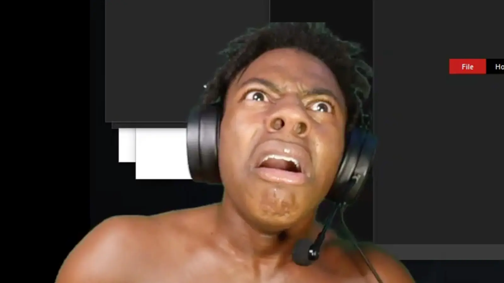

IShowSpeed
Najwspanialszą rzeczą, a raczej osobą jest IShowSpeed znany też jako IShowMeat. Mój idol jest fanem Cristiano Ronaldo CR7 Siuuuu. Sukcesem mojego idola jest jego niepowtarzalny charakter i charyzma wyróżniająca go spośród innych osób tworzących filmy jak i transmitujący na żywo gry lub wydarzenia na platformie YouTube. Jego transmisje przyciągają stałe grono dziesiątek tysięcy osób z całego świata, które chcą zobaczyć jak ich idol np: wysadza fajerwerki w pokoju, bądź też skacze głową wprost na monitor doznając niesamowitych kontuzji i ubytków mózgu, przysparzając swoim fanom niezapomnianych wrażeń.
IShowSpeed jest też genialnym piłkarzem, jak jego idol Cristiano Ronaldo CR7 Siuuuu. Na meczu charytatywnym grupy Sideman nie trafił rzutu karnego co spowodowało porażke jego drużyny. Warto dodać, że IShowMeat jest certyfikowaną małpą i uwielbia szczekać jak pies na przechodniów w miejscach publicznych. Jego odwiecznym rywalem jest KSI należący do grupy Sideman. Panowie są w konflikcie od 2022 roku, gdy to mój idol wykosił swojego rywala jak trawę z ogródka. IShowSpeed jest nazywany IShowMeatem po transmisji, na której przez przypadkiem pokazał swoje przyrodzenie. Po tym incydencie mój idol się nie załamał , ale to wydarzenie pozostawiło ślad na jego małym mózgu. IShowSpeed może nie być inteligentny, lecz jest uzdolniony muzycznie oto fragment tekstu jego pioseneki world cup:
Let's go
Everybody rise up
Stand up
It's that time
Come on
We got Portugal, we got Mexico, France, England, Brazil
Belgium, Q-tar, Germany
U.S.A, Iran, Canada
Argentinia, Australia
Crotia, Switzerland, Ghana, Japan
Urugay, Morocco, Sauda Arabia
Ecudor, Wales, Poland, Tsunsia
Cameroon, Serbia, Korea
Netherlands, Senegal, Costa Rico
Let's play football
World Cup (uh), World Cup (uh), World Cup (uh), World Cup (uh)
World Cup (uh), World Cup (uh), World Cup (uh), World Cup (uh)
World Cup, it's time to play football
World Cup, it's time to play football
World Cup (uh), World Cup (uh), World Cup (uh), World Cup (uh)
IShowMeat says the N-word